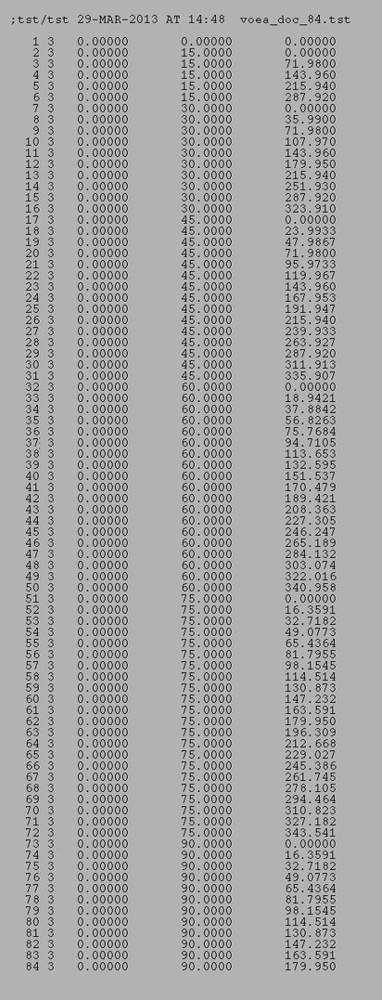
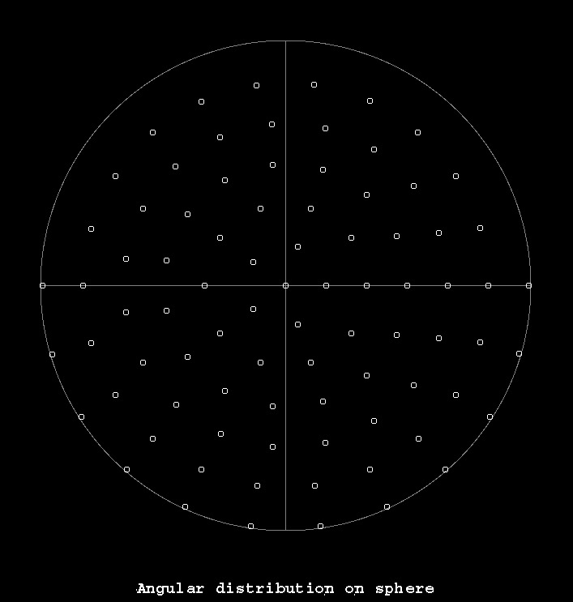
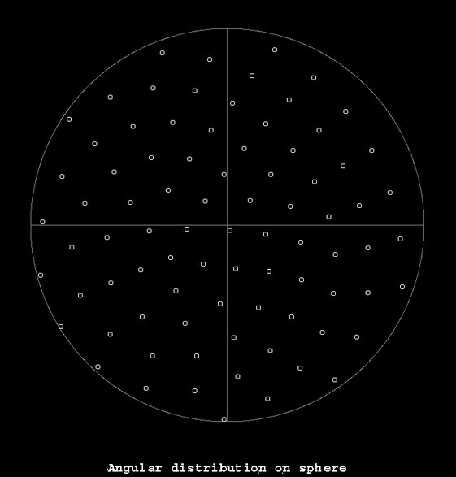

| .OPERATION: | VO RAS | ; Rotate angular doc file & Set Angle |
| .ANGULAR DOC FILE: | voea_doc_84 | ; File name (input) |
| .ROTATION ANGLES - PSI, THETA & PHI: | 30, 30 ,30 | ; Angles |
| .ANGLE NUMBER(e.g. PSI IS 1) & VALUE: | 1, 10 | ; Set psi's to ten |
| .ANGULAR DOC FILE: | voras_doc_84 | ; File name (output) |
| INPUT ANGULAR DOC FILE | OUTPUT ANGULAR DOC FILE | |
|---|---|---|
|  | | |
| voea_doc_84 | voras_doc_84 |
| RENDERING OF ANGULAR DISTRIBUTION (Using plotangs & plotangs_p) |
RENDERING OF ROTATED ANGULAR DISTRIBUTION (Using plotangs & plotangs_p) |
|---|---|
|  |  |
| voea_plot_84 | voras_plot_84 |